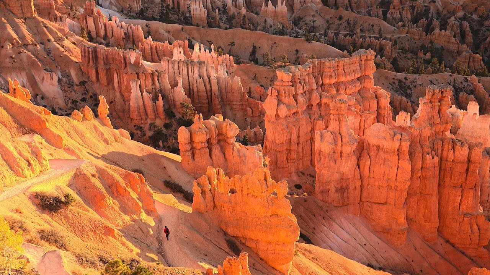
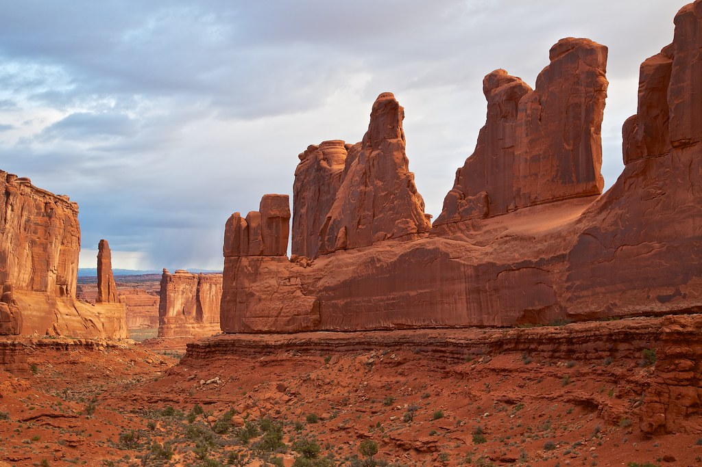
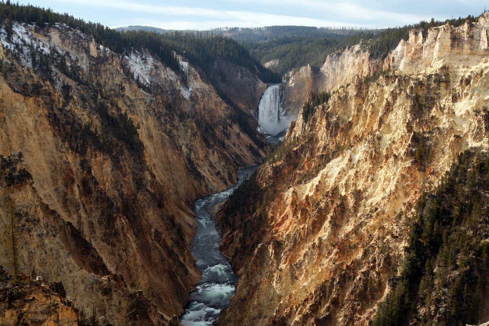
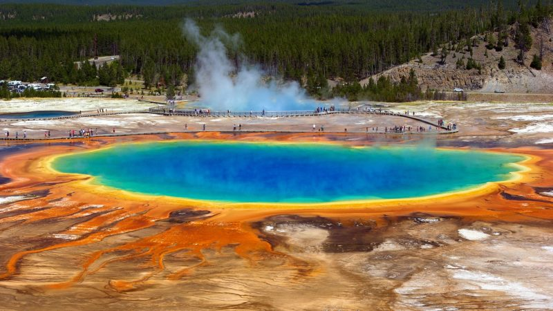

그 중에서도 브라이스 캐니언, 아치스 캐니언, 옐로스톤 국립공원 3곳을 제일 추천합니다.
세 곳 다 한국인이 많이 방문하는 LA와 라스베가스에서 거리가 멀지만 그래도 강력 추천합니다.
브라이스 캐니언은 가는 기둥이 여러 개 뭉쳐 있어 아기자기하고 화려한 느낌이 나는 캐니언입니다.

아치스 캐니언은 아치 모양의 암석과 거대한 암석이 띄엄띄엄 있어 장엄한 느낌을 줍니다.

옐로스톤 국립공원은 화산 활동이 활발해서 온천수가 하늘로 솟구치며 분출하는 것을 매일 볼 수 있고 차를 타면서 들판에 있는 들소(바이슨),곰, 사슴 등 다양한 동물을 구경할 수 있습니다.
아름다운 계곡인 Artist Point는 일류 화가가 그린 것처럼 너무 아름다운 장소입니다. 하루 종일 그곳에만 있어도 지겹지 않을 정도입니다.

옐로스톤 국립공원에는 파랑, 노랑, 초록, 빨강 등 무지개처럼 다양한 색을 가진 Grand Prismatic Spring라는 화려한 온천 호수가 있습니다.
가까이 가면 김이 모락모락 나고 호수가 넓어 사진에 호수 전체를 담기 쉽지 않습니다. 높은 데서 찍은 항공 사진을 인터넷에서 봐야 이 호수의 전체 모습을 알 수 있습니다.
